In this part of the tutorial we will show you how you can deploy a standard WAR file onto the Service Grid.
The integration allows you to make use of the following Service Grid features:
Dynamic allocation of several instances of a web application (probably fronted by a load balancer).
Management of the instances running (if a GSC fails, the web application instances running on it will be instantiated on a different GSC).
SLA monitor-based dynamic allocation and de-allocation of web application instances.
The web application itself is a pure, JEE-based application. The application can be the most generic web application, and automatically make use of the Service Grid features.
Here is an example how you can deploy a web application on top of the service grid. We can accomplish this in three ways; by command line, with the Web Management Console, or with the REST API:
You deploy a WAR file just like you deploy a PU JAR.
GS_HOME/bin/gs.sh deploy tutorial.war
GS_HOME\bin\gs.sh deploy tutorial.war
curl -X POST --header 'Content-Type: application/json' --header 'Accept: text/plain' -d '{
"name": "eventPU",
"resource": "...path..to\eventPU.jar"
}' 'http://localhost:8090/v1/deployments'
You can deploy a WAR file just like a PU with the Web Management Console:
|
Host view 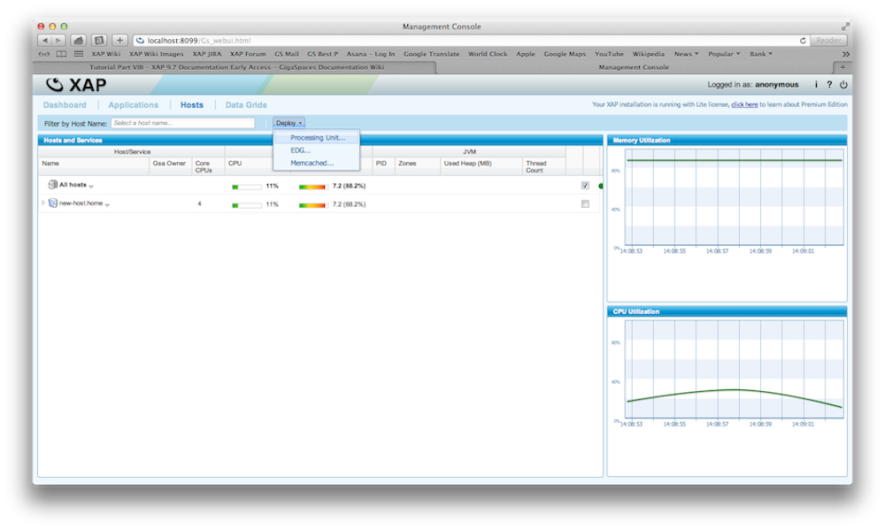 |
Upload WAR file 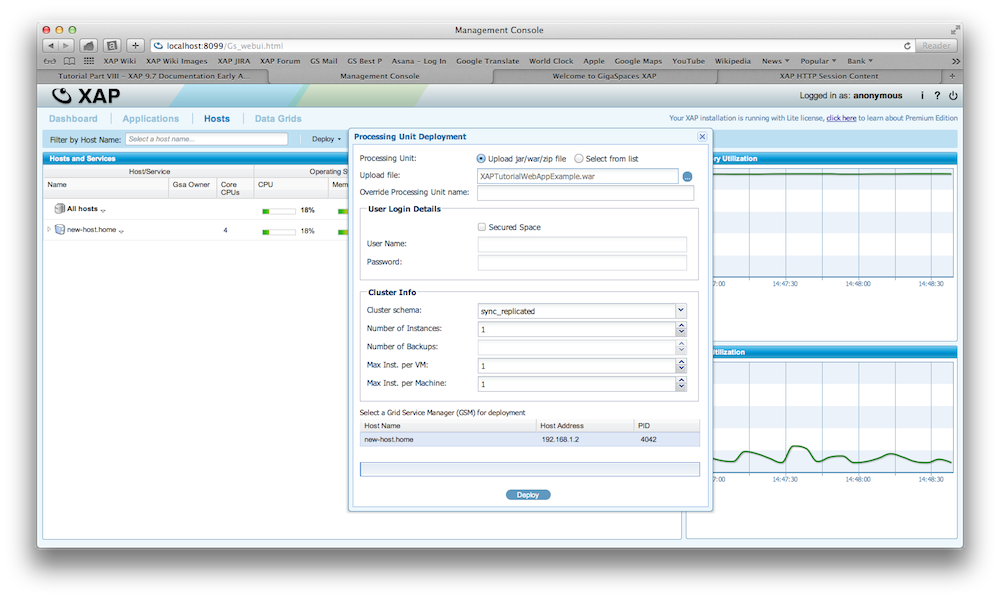 |
Application display 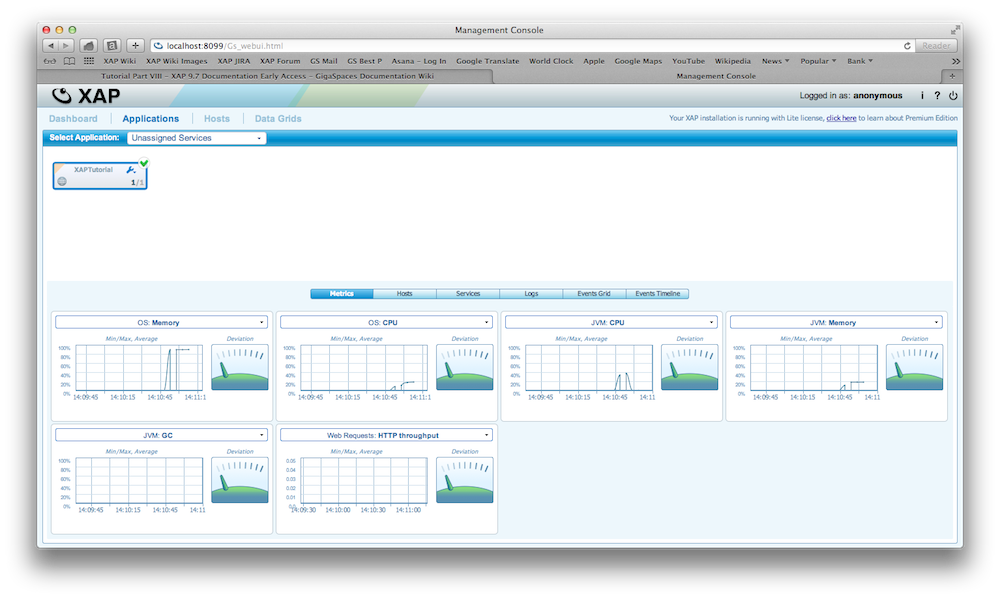 |
Service display 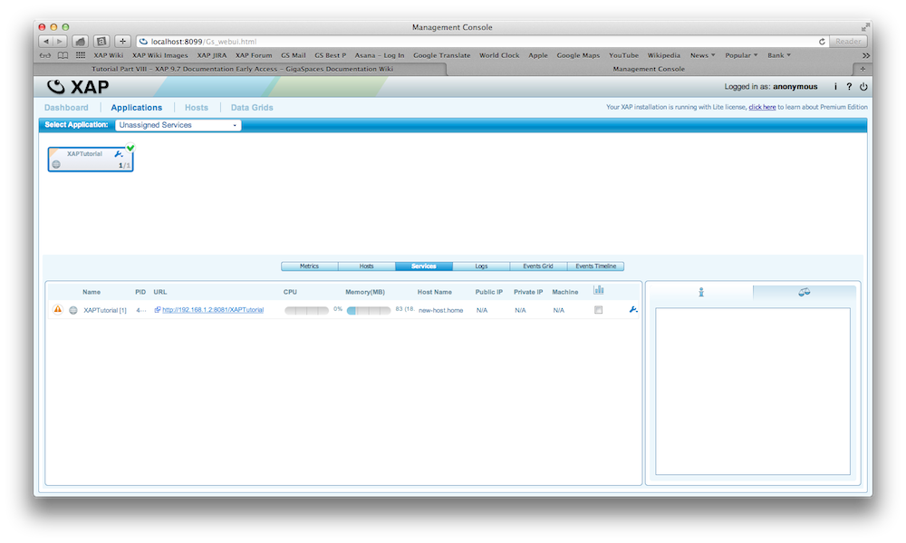 |
Web page display 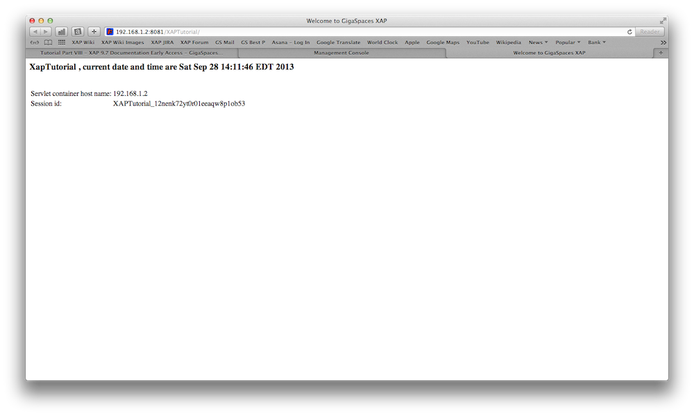 |
The web application can define a space either embedded or remote using Spring or direct in java code. There are several ways that a space and other components can be used and configured within a web application. Here are some scenarios:
Creating a space using java code:
EmbeddedSpaceConfigurer configurer = new EmbeddedSpaceConfigurer("xapTutorialSpace");
GigaSpace gigaSpace = new GigaSpaceConfigurer(configurer).gigaSpace();
Here is the layout of the WAR file structure:
|----META-INF
|--------spring
|------------pu.xml
|------------pu.properties
|------------sla.xml
|--------MANIFEST.MF
|----WEB-INF
|--------lib
|--------web.xml
|----index.jsp
|---- .jsp
For example in the pu.xml file we can define our space that we want to be accessible from the web application.
<os-core:embedded-space id="space" space-name="xapTutorialSpace" />
<os-core:giga-space id="xapTutorialSpace" space="space"/>
Here is an example of a simple JSP that uses it:
GigaSpace gigaSpace = (GigaSpace) getServletContext().getAttribute("xapTutorialSpace");
For more information, see the Web Application Support section in the developer guide.
Jetty itself is configured using Spring, and allows you to control all aspects of both the Jetty instance created, and the web application context. There are two flavors of how Jetty instances are created (by default). The first is the plain mode, where a Jetty instance is created for each web processing unit instance running within a GSC. The second is the shared mode, where a single Jetty instance is created, and shared between all the different web processing unit instances running on the same GSC. A custom Jetty instantiation and handling can also be configured.
For more information, see the Web Application Support section in the developer guide.
The
The
Avoid using database as the persistent storage media - Better performance and simplify the deployment
Allow management and control of full lifecycle of web application - From the load-balancer to the data
Dynamic scalability - Allows the web application to scale up or down based on SLA
Continuous High-Availability - Allows the application to survive any system failures
Non intrusive session management or explicit Data Grid API access for fine grain control - Allows multiple web servers to share the same session in transparent manner
There are several ways to configure Space session based support, depending on the definition of which space and how the space was started.
For example, if the session will be stored on a remote clustered space with a local cache, the URL can be: jini:////sessionSpace?useLocalCache (assuming the name of the space is sessionSpace). If the session should be stored on a space that should be started within the web application.
Using Deploy property
Here is how you can deploy an existing WAR file without changing it (or use Spring) to use
gs deploy -properties embed://jetty.sessions.spaceUrl=jini://*/*/sessionSpace?useLocalCache xapTutorialSpace.war
In this example we connect to a remote space called sessionSpace and create a local cache for the session caching.
jetty.sessions.spaceUrl property value. This should be set with the space URL defining where the sessions will be stored.|
Deploy HTTP Space 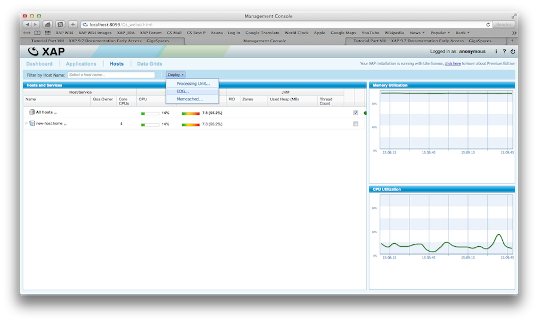 |
Define deployment 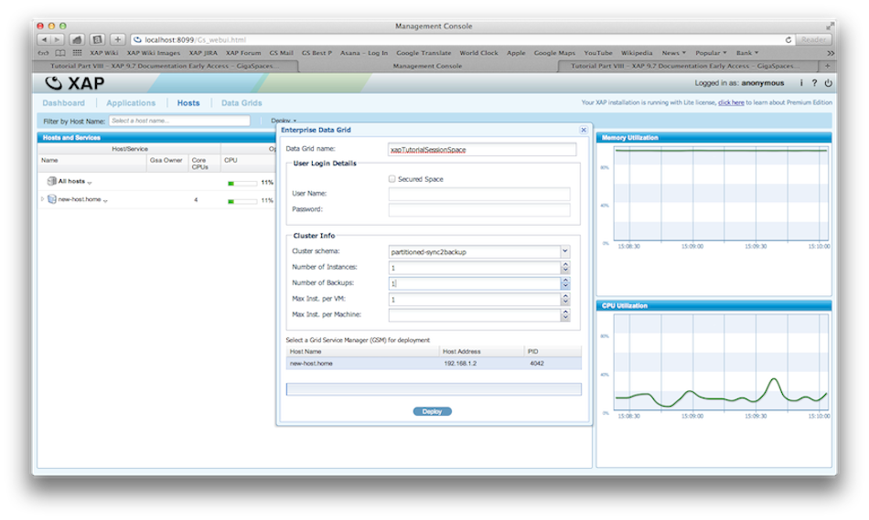 |
Inspect data grid 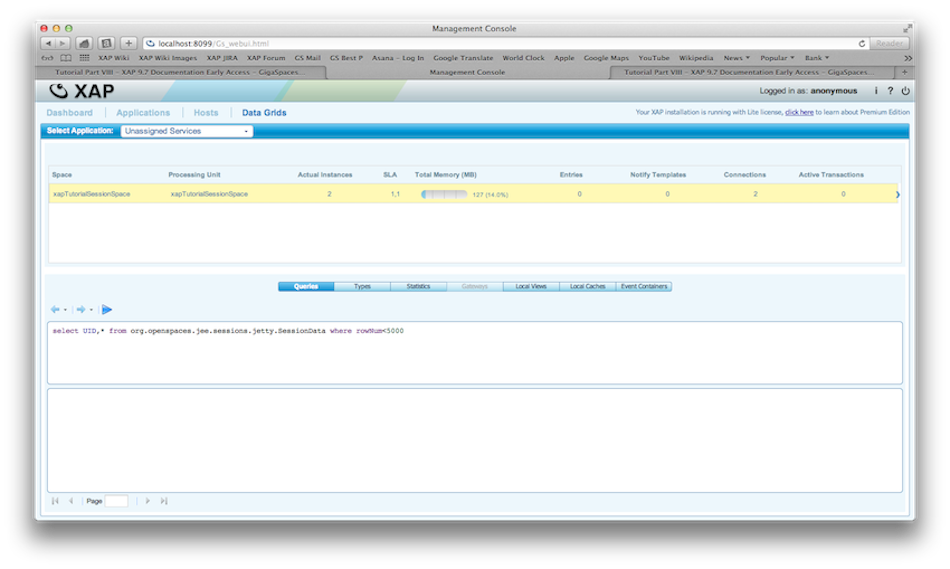 |
Deploy WAR file 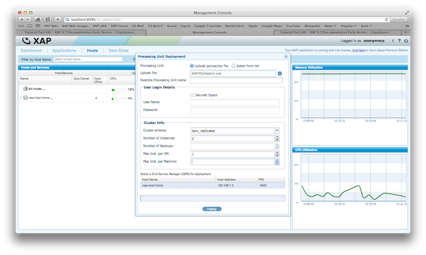 |
|
Select web URL 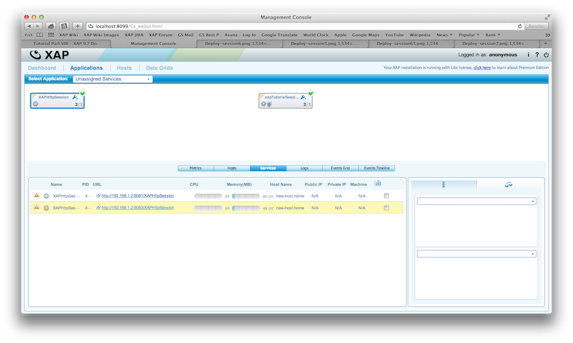 |
Web page 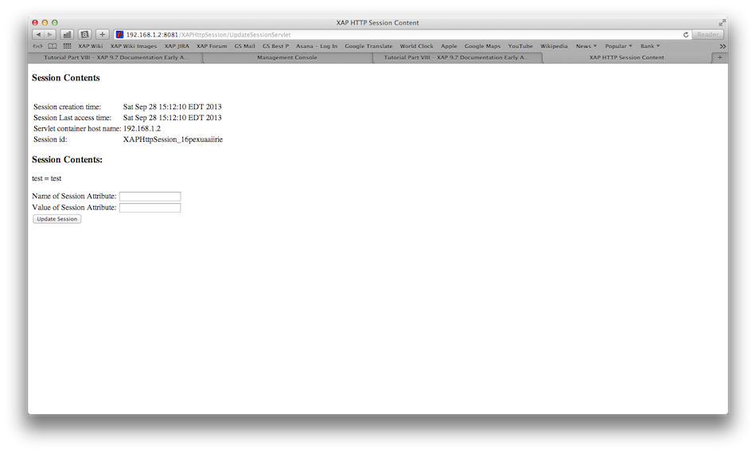 |
Inspect data grid 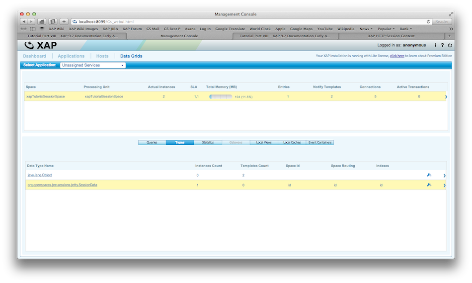 |
Inspect session 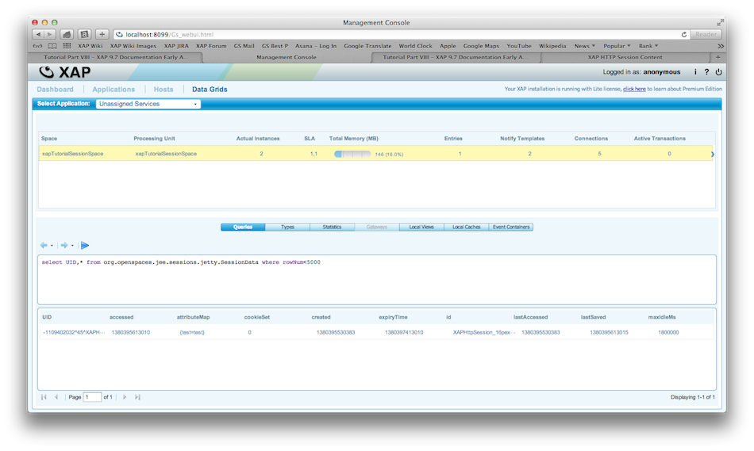 |
For more information, see the HTTP Session Management page in the developer guide.
When deploying a highly available web site, usually a load balancer is used to load balance requests between at least two instances of a web containers that run the web applications. When using
The integration dynamically creates and updates the mod_proxy_balancer configuration, based on the state of the deployed web applications. Once changes occur (relocation / failover / changes to the number of web application instances), the utility identifies the change, updates the balancer configuration, and sends a soft restart to Apache to take the new configuration into account.
For more information, see the Apache Load Balancer Agent page in the developer guide.